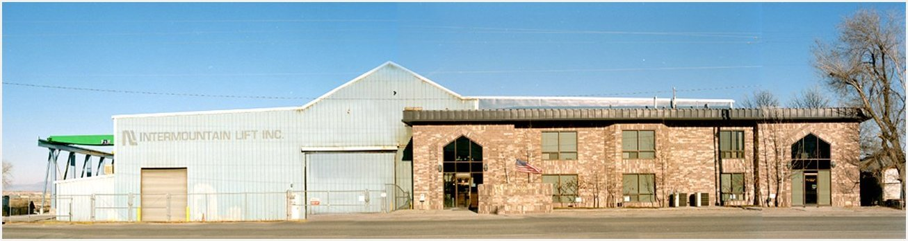

<div class="facilities-wrapper">
    <div class="container">
        <h2>Facilities</h2>
        <p>To handle almost any specialized steel fabrication job, Intermountain Lift, Inc. utilizes a large production facility. An environmentally controlled 70,000 square foot enclosed work area protects all materials from weather, dust, and temperature fluctuation. Intermountain Lift is also equipped with fifteen overhead cranes, 5-ton through 45-ton capacities.</p>
        <p>The present facilities are located on 10 acres of terraced, graveled surface. All shops are assembled together as one total facility, with the exception of the paint shop, which stands alone but connects to the blast shop area with an outside crane way extension.</p>
        </br>
        </br>
        

    </div>
</div>